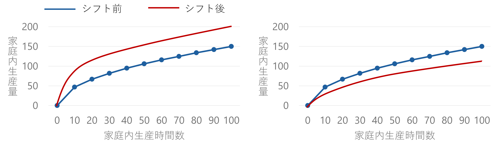
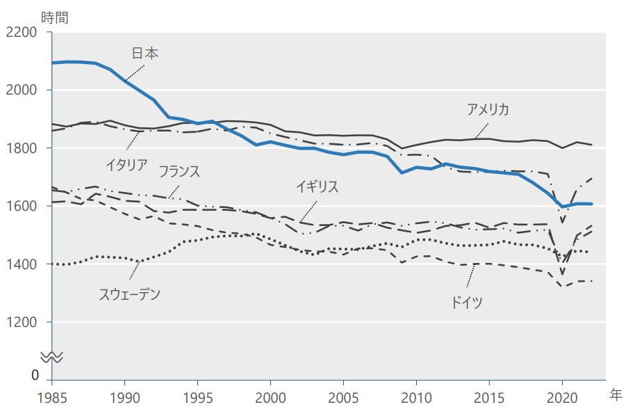
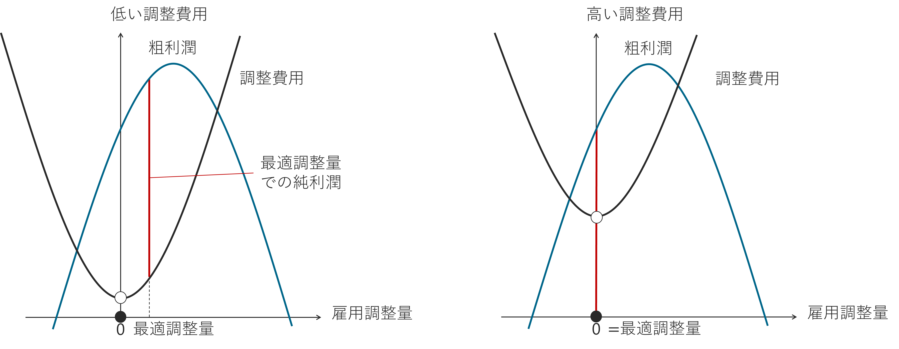

労働市場における需要と供給
本資料は、大森義明・永瀬伸子（2021）『労働経済学をつかむ』（有斐閣） を参考に作成しています。 授業目的に合わせて一部構成や表現を調整しています。
この章では、労働経済学の基礎として、「労働市場とは何か」、そして「労働市場における需要と供給がどのように決まるのか」を分析します。
労働経済学の根幹となる考え方ですので、ぜひここでしっかりと理解を深めておきましょう。
賃金と雇用量の決定
この資料には、度々「労働市場」という言葉が出てきますが、労働市場とは何でしょうか？
- 労働市場：働き手が働きたいと思って仕事に応募（求職）し、企業が雇いたいと思って求人を出し、その結果労働力が取引される市場
実際には、労働市場という名前の具体的な場所があるわけではないですし、魚市場のように労働者が競りにかけられたり、明確に価格（時間当たり賃金）が変動したりするわけではありません。
しかし、求職者数に対して求人が多ければ、時間をかけて時給は上昇していきますし、逆に求人が少なければ時給は下がっていきます。
例えば、新型コロナ感染拡大期以前、2015年～2019年までに、求職者1人当たりの求人数を表す有効求人倍率は1.2から1.6まで上昇し1、同じ時期に三大都市圏におけるアルバイト・パートの募集時平均時給も981円から1084円へと上昇しました2。
このように、「求人を出す」「応募する」といった行動が交わされる概念的な空間として労働市場を捉えることで、財やサービスの市場と同じように、その動きをデータから分析することが可能になります。
労働市場において、雇用量と賃金は、
- 企業の求人数の増加や減少
- 働きたい人の増加や減少
によって決定されます。
このような決定を示すために、横軸に雇用量、縦軸に賃金をとる労働市場のモデルが使用されます。

賃金と雇用量はこれら2つの曲線の交点（需要と供給が一致する点）で決まり、それ以外の点では労働供給が過剰（失業が生じる）か、労働需要が満たされない（企業に欠員が生じる）ことになります。
- 失業：労働供給\(>\)労働需要であるため、賃金を下げる圧力が働く
- 欠員：労働供給\(<\)労働需要であるため、賃金を上げる圧力が働く
これにより、市場の賃金と雇用は2つの曲線の交点に近づいていきます。
- 交点：均衡点
- 交点における賃金：均衡賃金（\(W^*\)）
- 交点における雇用量：均衡雇用量（\(L^*\)）
確認クイズ：
次の文の空欄を埋めてください。
ある賃金が与えられたときに、その賃金のもとで雇用したい労働量を表した曲線を 、その賃金のもとで働きたい労働者の量を表した曲線を という。
均衡における賃金と雇用量は で決まり、そのとき、労働者の需要量と供給量は 。
選択肢
労働者 労働需要曲線 労働供給曲線 時間当たり賃金 市場均衡 均衡点 生産性 景気循環 一致する 労働供給量の方が多い 労働需要量の方が多い
労働需要曲線・労働供給曲線のシフト
労働需要曲線・労働供給曲線は、景気の動向や人々の選好の変化によって変化（シフト）します。

シフトが起こる前の均衡雇用量は\(L_1\)、均衡賃金は\(W_1\)だとします。
例えば、景気が良くなると、同じ賃金のもとで労働者を雇いたい企業が増える（労働需要の増加）ため、労働需要曲線は右上にシフトします。
このとき、
- シフト前の均衡賃金\(W_1\)のもとで雇いたい労働者の数は\(L_1\)から\(L_3\)に増加
- \(W_1\)のもとで働きたい労働者は\(L_1\)のまま
- 企業の欠員が生じ、賃金に対する上昇圧力が働く
- この圧力は賃金は\(W_2\)に上がるまで続き、最終的に、シフト後の需要曲線と供給曲線の交点で決まる均衡に落ち着く
\(\rightarrow\) 賃金は\(W_1\)から\(W_2\)に上昇し、雇用量も\(L_1\)から\(L_2\)に増加
好景気のほかにも、例えば特定の財やサービスの需要の増加や、技術革新・産業構造の変化などによって労働需要がシフトします。
もちろん、反対に景気後退や特定産業での需要減少などが生じると、労働需要は減少し、労働需要曲線は左下にシフトすることになります。

労働供給曲線がシフトすると何が起こるでしょうか？
例えば、何らかの要因によって自国民と同質の労働を提供できる移民労働者が流入が増えたとすると、同じ賃金のもとで働きたい労働者が増える（労働供給の増加）ため、労働供給曲線は右下にシフトします。
このとき、
- 市場にはシフト前の均衡賃金\(W_1\)のもとで働きたい労働者よりも少ない雇用量しか需要されていない
- 失業が生じ、賃金に対する下降圧力が働く
- この圧力は賃金が\(W_4\)に下落するまで続き、最終的に、需要曲線とシフト後の供給曲線の交点で決まる均衡に落ち着く
\(\rightarrow\) 賃金は\(W_1\)から\(W_4\)に下落し、雇用量は\(L_1\)から\(L_4\)に増加
ほかにも、家電製品の進歩により家事負担が減ったり、人口が増加したりすることによって、同じ賃金でも働きたいという個人が増えると労働供給はシフトします。

供給曲線の傾きは、人によって異なると考えられます。
- 傾きが緩やか：少しの賃金上昇に反応して労働供給が大きく増加する状況を反映
- 傾きが急：多少の賃金上昇では労働供給があまり増えない状況を表す
例えば、
- パート労働者：正社員に比べて緩やかな右上がりだと言われている
- 賃金が上昇するとこれまで働いていなかった層が働きに出るため、労働供給が大きく増加すると考えられる
- 医師：かなり急な右上がりだと考えられている
- 医師として働くには国家資格が必要であり、医師免許を持っていて働けるような人は、すでにその多くが働いていると考えられる
確認クイズ：
次の文の空欄を埋めてください。
労働需要が減少すると、労働需要曲線は にシフトする。シフト前と比較して、シフト後の均衡賃金は し、均衡雇用量は する。
選択肢
右上 右下 左上 左下 上昇 下落 増加 減少
労働供給
労働供給モデル
ここでは、先ほど見たような労働供給曲線の傾きの差はなぜ生じるのか、労働供給行動はどのように決定されるのかについて考えていきます。
労働供給とは、
- マクロ経済学的な視点から見ると、
- 働いている、もしくは働きたいと思って仕事を探している人数の合計
- その人々が供給している労働時間の総計
- ミクロ経済学的な視点から見ると、
- 1人の個人が仕事を探して働くか働かないか
- 働くとしたら何時間働くかの意思決定の結果
このような意思決定を個人の視点から考えるのが労働供給モデルです。
ここでは、労働供給モデルを考えるために必要な概念を1つひとつ押さえながら、労働供給がどのように決定され、どのように変化するのかを分析していきましょう。
1. 財と効用
そもそも人が働く根本的な理由は生きていくためです。
- 労働力を提供する
- 所得を得る
- さまざまな財やサービスを消費する
以下では、「財やサービス」は単に「財」と呼ぶことにします。
2. 労働と余暇のトレードオフ
長時間働くと何が起こるでしょうか？
- 長時間働く \(\rightarrow\) 多くの所得を得る \(\rightarrow\) 多くの財を消費できる \(\rightarrow\) 効用が高くなる
- 長時間働く \(\rightarrow\) 余暇の時間（働かない時間）が犠牲になる \(\rightarrow\) 余暇からの効用を得ることができない
以下では、財の消費と余暇はいずれも効用を高めると仮定します。この仮定は、長時間働くことは効用を低めると仮定することも意味します。財と余暇が両方とも効用を高めるからこそ、両者のトレードオフが問題になるのです。
つまり、この例において、タカシがアルバイトに費やすことができるのは最大週78時間に限られて（制約されて）いて、その78時間を何時間働くか、 何時間を余暇（友人と遊ぶ、趣味をする、自主的な勉強時間3などのアルバイト以外の時間）に割り当てるかを決定する必要があるです。
3. 予算制約線
何時間アルバイトに費やすか（労働供給量）を決定するにあたって、タカシはもう一つの制約に直面しています。それが総収入と余暇時間のトレードオフです。
先ほどの例について、極端な例を考えてみましょう。
- 週78時間働く
- 月78,000円稼ぐことができ生活は楽になる
- 友人との遊びや趣味の時間は一切なし
- 勉強時間も取れずに成績が下がる可能性がある
- 大学生活を楽しんでいる実感が得られなかったり、何のために働いているのかが分からなくなったりする可能性がある
- すべてを余暇の時間にする
- 生活は苦しいまま
どちらの選択肢をとったとしても、生活の満足度が最大になっているとは言えません。消費から得られる効用と余暇から得られる効用の、どちらもそれなりに得られるように、アルバイトと余暇の時間をバランスよく割り振ることが、消費と余暇のトレードオフを考えるということです。
ここで、タカシが取りうる選択肢を見ていきます。
| 余暇時間数（時間）4 | 0 | 10 | 20 | 30 | 40 | 50 | 60 | 70 | 78 |
| アルバイト時間数 | 78 | 68 | 58 | 48 | 38 | 28 | 18 | 8 | 0 |
| アルバイト収入（千円） | 78 | 68 | 58 | 48 | 38 | 28 | 18 | 8 | 0 |
| 親からの仕送り収入（千円） | 20 | 20 | 20 | 20 | 20 | 20 | 20 | 20 | 20 |
| 総収入（千円） | 98 | 88 | 78 | 68 | 58 | 48 | 38 | 28 | 20 |
この表から分かる通り、タカシが働ける時間は週78時間以内に限られているので、総収入を増やすには、アルバイトの時間数を増やし、余暇時間数を減らす必要があります。逆に、余暇時間数を増やすにはアルバイトの時間数を減らす必要があります。
ちなみに、ここではタカシの時給は1000円で固定であると仮定しています。この仮定を経済学では、タカシは価格受容者である、あるいはタカシは完全競争者であると言います。

この図は、先ほどの表に基づき、横軸に余暇時間数、縦軸に総収入をとり、タカシが取りうる選択肢を右下がりの直線で表したものです。例えば、先ほど考えた週78時間働くという極端な選択肢は点A、すべてを余暇に充てるという選択肢は点Bに相当します。
このほかにも選択肢はたくさんあり、例えば、点Cは週38時間アルバイトをして58,000円の総収入を得るという選択肢に相当します。
経済学では、選択可能なすべての選択肢を示すこの右下がりの直線を、予算制約線（予算線）と言います。
予算制約線の上側は、時間の制約をオーバーしており、選択可能ではない組み合わせを表します。
点Bの状態にある人たちは働く意志がないため、非労働力と呼ばれ、そのほかの選択可能な組み合わせを選んでいる人たち（直線上の状態にある人たち）は労働力と呼ばれます。
- 予算制約線が右下がりである \(\Leftrightarrow\) 余暇時間数を増やすと総収入が減る（トレードオフ）
- 予算制約線の傾き（ここでは‐1000円/時） \(=\) 余暇を1時間増やすために犠牲になる総収入
- 機会費用 or 余暇の限界費用
4. 無差別曲線
予算制約線によって、タカシが取りうる余暇時間数と総収入の組み合わせが分かりました。次は、この組み合わせの中でタカシの満足度（効用）を最大にするものはどれかを考えていきます。
前提として、どの選択肢がタカシにとって1番良いかはタカシの好みに依存します。タカシが余暇を重視するのであれば、アルバイトをしない点Bを選ぶかもしれませんし、とにかく総収入を上げることに情熱を燃やすのであれば、点Aを選ぶかもしれません。
このような好みを表現するために、経済学では以下のような無差別曲線というものを考えます。

無差別曲線は効用が等しい組み合わせを示した曲線なので、1つの曲線上のどこに位置していても、タカシの満足度は同じです。
例えば、無差別曲線 \(U_{1}\) 上の点を見てみると、余暇時間数と総収入の組み合わせ \((余暇, 総収入)\) が \((10時間, 80千円)\) と \((20時間, 60千円)\) は同じくらい望ましいということになります。
無差別曲線には、以下のような重要な性質があります。
1. 無差別曲線は右下がり
余暇時間数が増えると効用が上がるため、同一無差別曲線上で効用を一定に保つためには総収入が減る必要がある
- 無差別曲線の傾きはタカシが追加的な1時間の余暇を楽しむために減っても構わないと考える総収入の減少分を表すため、無差別曲線の傾きは限界効用を総収入の単位で測ったものであるといえる
- 経済学では無差別曲線の傾き（の絶対値）を限界代替率という
2. 限界効用逓減
余暇時間数がすでに多いなら、追加的に1時間余暇が増えることがもたらす効用（限界効用）は小さい
- この性質により、無差別曲線の形状は原点に向かって凸型となる
3. 右上に位置する無差別曲線 \(=\) より高い効用水準
図では、 \(U_{2}\) より \(U_{1}\) の方が効用が高い
- 同じ余暇時間数20時間でも、
- \(U_{1}\) では総収入が60千円
- \(U_{2}\) では総収入44千円 \(\rightarrow\) \(U_{1}\) の方が効用が高い
4. 無差別曲線は交差しない
なぜなら、交差するとしたら、交差点を境に一方が右上に位置する（より効用が高い）と同時に左下にも位置する（より効用が低い）ことになり、効用が一定であるという定義に矛盾するため
🎯 予算制約線と無差別曲線から予測するタカシにとっての最適な選択肢
ここでは、タカシの選択肢を表す予算制約線と、タカシの好みを表す無差別曲線を組み合わせ、タカシにとって最適な選択肢を予測するモデルを考えていきます。
タカシが選べるのは予算制約線上の組み合わせなので、10時間の余暇（68時間の労働）から徐々に余暇を増やしていくことを考えます。
\((余暇, 総収入) = (10時間, 88千円)\)
- 余暇の限界効用（無差別曲線の傾きの絶対値） \(>\) 限界費用（予算制約線の傾きの絶対値）
\(\rightarrow\) 余暇を増やし総収入を減らすべき
\((余暇, 総収入) = (20時間, 78千円)\)
- 余暇の限界効用 \(>\) 限界費用
\(\rightarrow\) 余暇を増やし総収入を減らすべき
つまり、余暇の限界効用 \(>\) 限界費用の間は、追加的に余暇を増やすことで得られる効用が限界費用を上回っているため、余暇を増やし総収入を減らすべきと言えます。
無差別曲線の性質から、限界効用は余暇時間数が増えるに従い小さくなっていき（限界効用逓減）、限界費用は一定（時給1000円に一致）であるため、どこかのタイミングで余暇の限界効用 \(=\) 限界費用となる点が訪れます。
逆に、70時間の余暇（8時間の労働）から徐々に余暇を減らしていくことを考えます。
\((余暇, 総収入) = (70時間, 28千円)\)
- 余暇の限界効用 \(<\) 限界費用
\(\rightarrow\) 余暇を減らし総収入を増やすべき
\((余暇, 総収入) = (60時間, 38千円)\)
- 余暇の限界効用 \(<\) 限界費用
\(\rightarrow\) 余暇を減らし総収入を増やすべき
先ほどとは逆に、余暇の限界効用 \(<\) 限界費用の間は、追加的に余暇を増やすことで得られる効用が限界費用を下回っているため、余暇を減らし総収入を増やすべきと言えます。
このように余暇時間数を減らしていくと、どこかのタイミングで余暇の限界効用 \(=\) 限界費用となる点が訪れます。
最終的に、タカシにとって最適な選択肢はこの点で達成されます。
また、このときタカシの効用は予算制約線と最適な選択肢を達成する点で接する無差別曲線（\(U^*\)）で表されます。 最適な選択肢をとるときに効用が最大化されているので、このときの無差別曲線は予算制約線と交わる無差別曲線の中で一番右上に位置しているからです。

図の無差別曲線が正しくタカシの好みを反映しているとすると、\((余暇, 総収入) = (25時間, 73千円)\) の組み合わせが最もタカシの効用が高くなる最適な選択肢だと言うことになります。
5. 限界原理
経済学では、このような点で最適な選択が達成される事実は、限界原理として知られています。
余暇時間数と総収入の割当に関する意思決定においては、最適な選択肢は余暇の限界効用 \(=\) 限界費用となる点で達成されるということに相当します。
確認クイズ：
Aさんの余暇の限界効用が以下の表で与えられているとき、Aさんは時給2000円の仕事に全体の時間の何%を割り当てるのが最適か求めてください。
| 従事時間（%） | 0 | 10 | 20 | 30 | 40 | 50 | 60 | 70 | 80 | 90 | 100 |
| 余暇時間（%） | 100 | 90 | 80 | 70 | 60 | 50 | 40 | 30 | 20 | 10 | 0 |
| 余暇の限界効用（千円） | 0.2 | 0.6 | 0.8 | 1 | 1.5 | 2 | 4 | 8 | 12 | 16 | 20 |
%
所得・賃金の変化と労働供給
基本的な労働供給モデルが理解できたので、次は周りの環境が変わったときに、タカシがどのように選択肢を変えるかを考えてみます。
1. 非労働所得が増えるケース
まずは、親からの仕送りが増えたケースを考えます。
親からの仕送りが週3万円に増えたとき、取りうる選択肢は以下のように変わります。
| 余暇時間数（時間） | 0 | 10 | 20 | 30 | 40 | 50 | 60 | 70 | 78 |
| アルバイト時間数 | 78 | 68 | 58 | 48 | 38 | 28 | 18 | 8 | 0 |
| アルバイト収入（千円） | 78 | 68 | 58 | 48 | 38 | 28 | 18 | 8 | 0 |
| 親からの仕送り収入（千円） | 30 | 30 | 30 | 30 | 30 | 30 | 30 | 30 | 30 |
| 総収入（千円） | 108 | 98 | 88 | 78 | 68 | 58 | 48 | 38 | 30 |
このとき、予算制約線は以下の図のように変化します。

仕送りが週2万円のときの予算制約線（青い直線）と比較して、新しい予算制約線（赤い直線）は1万円分上に平行移動しています。
アルバイトの時給（余暇の機会費用）は1000円のままなので、傾きは変化しません。
経済学では、親からの仕送りのような非労働所得が増えたとき、人々はより多い余暇時間数を希望するようになることが知られています。
- 非労働所得：労働することなしに得られる所得のこと
例えば、親からの仕送りが増える前には点Aを選んでいたとすると、親からの仕送りが増えた後に、タカシは例えば点Bを選ぶようになります。
これは、余暇が、所得が増えたときに消費を増やしたい財（正常財）であるからです。
多くの研究により余暇は正常財であることが分かっているため、所得が増えるとより多くの余暇時間を消費したいという気持ちが高まるのです。これを所得効果と呼びます。
2. 賃金が上がるケース
次に、アルバイトの時給が上がるケースを考えてみます。
時給が1000円から1500円にあがったとき、取りうる選択肢は以下のように変わります。
| 余暇時間数（時間） | 0 | 10 | 20 | 30 | 40 | 50 | 60 | 70 | 78 |
| アルバイト時間数 | 78 | 68 | 58 | 48 | 38 | 28 | 18 | 8 | 0 |
| アルバイト収入（千円） | 117 | 102 | 87 | 72 | 57 | 42 | 27 | 12 | 0 |
| 親からの仕送り収入（千円） | 20 | 20 | 20 | 20 | 20 | 20 | 20 | 20 | 20 |
| 総収入（千円） | 137 | 122 | 107 | 92 | 77 | 62 | 47 | 32 | 20 |
このとき、予算制約線は以下の図のように変化します。

時給1000円のときの予算制約線（青い直線）と比較して、新しい予算制約線（赤い直線）は右下の点を中心に時計回りに回転したような形になっています。
予算制約線の傾きが変化しているのは、時給が1000円から1500円に上がったことで、余暇の機会費用も1000円から1500円に増加するからです。
アルバイトの時給が上がるとき、タカシはより少ない余暇時間数（より多いアルバイト時間数）を希望することもあれば、より多い余暇時間数（より少ないアルバイト時間数）を希望することもあります。
例えば、時給が上がる前に点Aを選んでいたとしたら、点Bを選ぶ可能性も点Cを選ぶ可能性もあると言うことです。
点Bを選ぶ（アルバイトを増やし余暇を減らす）
時給が上がる \(\rightarrow\) 余暇の機会費用が増加 \(\rightarrow\) 余暇時間を減らしたい（代替効果）
点Cを選ぶ（余暇を増やしアルバイトを減らす）
時給が上がる \(\rightarrow\) 短い時間でより多くの所得を得られる \(\rightarrow\) より豊かになる \(\rightarrow\) 一定の余暇時間数のもとで得られる総所得が増える \(\rightarrow\) より多くの余暇時間を消費したい（所得効果）
ここでは、余暇の機会費用（余暇の相対的な価格）が増加したことによって、余暇時間数を減らし、労働供給量を増加させる効果のことを言います。
アルバイトの時給が上がるとき、タカシは代替効果を通じて余暇時間数を減らし（アルバイト時間数を増やし）、所得効果を通じて余暇時間数を増やす（アルバイト時間数を減らす）。この両方向への力が働くので、最終的にタカシが余暇時間数を増やすのか減らすのかは定かではありません。
- 「代替効果 \(>\) 所得効果」であれば余暇時間数は減少
- 「代替効果 \(<\) 所得効果」であれば余暇時間数は増加
代替効果と所得効果をあわせた両者合計の効果を総合効果と呼びます。
3. 賃金と労働時間の関係
2. 賃金が上がるケースのように、一般にはアルバイトの時給が上がってもタカシがアルバイト時間数を増やすかどうかは分かりません。
しかし、もしタカシが働いていない状態だとしたら、時給が（十分に）上がると、タカシは必ずアルバイト時間数を増やします。
アルバイトをしていない \(\rightarrow\) 時給が上がっても総所得が増えない \(\rightarrow\) 所得効果が生まれず代替効果のみが生じる \(\Leftrightarrow\) 余暇を減らしてアルバイト時間数を増やす圧力が生まれる
実際に時給がいくらになればアルバイトを始めるかは個人の好みによりますが、時給が十分に上がれば、タカシはいずれアルバイトを始めます。
- 留保賃金：ある個人を働く気にさせる最低限の賃金
- 「働いていない状態のときの最初の1時間を自分で使うことの価値」と言い換えられる
一般に、所得効果の規模はアルバイト時間数とともに大きくなります。実際に、時給1000円のときと1500円のときとで、総収入の差を比較してみると以下のようになります。
| アルバイト時間数 | 78 | 68 | 58 | 48 | 38 | 28 | 18 | 8 | 0 |
| 総収入（千円）：時給1000円 | 98 | 88 | 78 | 68 | 58 | 48 | 38 | 28 | 20 |
| 総収入（千円）：時給1500円 | 137 | 122 | 107 | 92 | 77 | 62 | 47 | 32 | 20 |
| 総収入（千円）の差 | 39 | 34 | 29 | 24 | 19 | 14 | 9 | 4 | 0 |
つまり、時給とアルバイト時間数（賃金と労働供給）の関係は一定ではないということです。
アルバイト時間数が多い
- 所得効果が大きい
- 所得効果 \(>\) 代替効果 になりやすくなる
- 今以上に時給が上がったとしてもアルバイト時間数を減らして余暇を増やす圧力が働く
アルバイト時間数が少ない
- 代替効果が大きい
- 所得効果 \(>\) 代替効果 になりやすくなる
- 時給が十分に上がれば余暇を減らしてアルバイト時間数を増やす圧力が働く
まとめると、アルバイト時間数が一定程度までは代替効果が大きくなりやすく労働供給は増加するが、一定のアルバイト時間数を超えると所得効果が大きくなりやすく労働供給は減少することになります。

労働供給モデルの応用：有配偶女性の職業選択
労働供給モデルは、いろんな場面に応用できます。
- 高齢者・女性などが行う就業・非就業の選択
- 政府の政策や企業の施策が労働供給に及ぼす影響
- 労働供給の時系列的な変化
- 格差の理解（男女間、年齢間、学歴間、産業間、職業間、地域間など）
ここでは、有配偶の女性の就業選択を例にします。 これまでの経済学において、女性（特に既婚女性）が自身のキャリアを構築しつつ賃金収入を求めて働くのか、家庭内で家事・育児・介護などの賃金労働でない形で働くのか、家庭内の労働以外の時間に家計補助的に働くのかは大きな興味を持って研究されてきました。
ひと昔前は、多くの女性は結婚すると仕事を辞め、家庭内の労働を選択していました。これは、はじめに-労働力率で見られたような労働力率のM字型カーブに反映されています。
現在、多くの先進国では賃金収入を求めて働く女性が大幅に増えています。これも、海外で見られる高原型の労働力率カーブに反映されています。
それでもなお、日本女性の年齢階級別労働力率からは、育児期の労働力が減少する傾向が見て取れます。ただし、近年無配偶女性の労働力率は高原型に変わってきました。
有配偶女性の就業選択はさまざまな要素に影響されます。
- 働かなくても生計維持に使える収入がどの程度か（夫の収入に対する裁量権など）
- 働いた場合に得られる手取りの賃金水準
- 賃金以外のやりがいといった便益がどの程度か
- 家庭内の労働から得られる便益がどの程度か
- 保育園や学童などの整備状況やその利用価格
- 育児休業制度の内容
- 社会保障や税制（手取り賃金額に影響を与えるため）
- 年収103万円の壁：所得税等がかからない範囲
- 年収130万円の壁：社会保険料が免除されたうえで基礎年金の給付権や医療を受けられる範囲
- 社会規範
- 教育による価値規範
次の章では、「家庭内生産」も組み込んで労働供給を分析していきましょう。
確認クイズ：
労働供給モデルを使い、夫の失業が非労働力状態にある妻の就業に与える効果を分析してみましょう。 次の空欄に適切な語句を入れてください。 ただし、夫の失業は妻が働かなくとも生計維持に使える収入を減らすとします。
非労働力状態にある妻は、 が0の状態を選んでいると考えることができる。 夫の失業は妻の を減らし、予算制約線を に平行移動させるので、この移動が十分大きなものであれば、妻は労働力化するような状態を選ぶようになる。
選択肢
労働供給量 労働需要量 賃金 労働所得 非労働所得 右上 右下 左上 左下 時給 社会保険料
労働と家庭内生産
家庭内生産モデル
これまでの章では、賃金が得られる労働と余暇の2つの活動しかない世界を考えていました。
しかし、半数近くの女性が出産を機にいったん無職となったり、育児休業を取ったりしている現実があります。 このような個人はすべてを余暇に割り当てているのではなく、家事・育児・介護といった家庭内での生産活動を行っています。 余暇は消費活動ですが、家事・育児・介護などは生産活動です。 家事代行や介護事業者などに頼むと料金が発生する活動、つまり賃金労働となるからです。 そこで、この章では賃金が得られる労働とこれらの活動を明確に区別します。
- 市場労働：賃金を伴う労働
- 家庭内生産活動：賃金を伴わない家庭内の労働
そして、財は市場で購入することも、家庭内生産で作り出すこともできるものとします。
ここでは、
- 個人は市場労働時間、家庭内生産活動時間、余暇時間をどのように選択するか
- 現代においてなぜより多くの女性が市場労働をするようになっているのか
を考えていきましょう。
1. 単身者の家庭内生産と市場財の購入
市場労働時間と家庭内生産活動時間の時間配分の選択は、1日、1週間、1年単位で何時間働き、何時間家事・育児をするか、あるいは、一生のうちに何年働き、何年家事・育児をするかという時間配分の決定です。
ここでも、財から効用を得るモデルを考えますが、これまでと違うのは財は家庭内でも生産できるということです。
家庭内で生産できる財の例
- 家庭菜園で採れる野菜
- 自分で縫う服
- 自分で行う子育て
- 自分で作る料理
※市場で購入できる財より品質は劣るかもしれませんが、単純化のために財の質はすべて同一であると仮定します。
このときに、マミは何時間市場労働に費やし、何時間家庭内生産活動に費やすのでしょうか？
| 家庭内生産時間数（\(H\)） | 0 | 10 | 20 | 30 | 40 | 50 | 60 | 70 | 80 | 90 | 100 |
| 家庭内生産量（\(Q\)） | 0 | 47 | 67 | 82 | 95 | 106 | 116 | 125 | 134 | 142 | 150 |
| 家庭内限界生産量 | \(-\) | 47 | 20 | 15 | 13 | 11 | 10 | 9 | 9 | 8 | 8 |
上の表は、マミが費やす1週間当たりの家庭内生産時間数と家庭内生産量の関係を表しています。 この例では、家庭内生産時間数 \(H\) から生産できる量 \(Q\) が以下の式によって表されます。
\[ Q = 15\sqrt{H} \]
家庭内限界生産量は、家庭内生産時関数を10時間増やすごとにどれだけ生産量が増えるかを示しています。

この図は、先ほどの表にもとづきマミの家庭内生産時間数と生産量、家庭内限界生産量をグラフに表したものです。
- 家庭内生産時間数が増えると家庭内生産量は増える
- 家庭内生産時間数が増えると家庭内限界生産量は減る
次に、市場労働と市場財の関係についてみていきます。
| 市場労働時間数 | 0 | 10 | 20 | 30 | 40 | 50 | 60 | 70 | 80 | 90 | 100 |
| 労働所得 | 0 | 15 | 30 | 45 | 60 | 75 | 90 | 105 | 120 | 135 | 150 |
| 市場財の購入量 | 0 | 15 | 30 | 45 | 60 | 75 | 90 | 105 | 120 | 135 | 150 |
| 市場労働の限界購入量6 | \(-\) | 15 | 15 | 15 | 15 | 15 | 15 | 15 | 15 | 15 | 15 |

この図は、表にもとづきマミの市場労働時間数と市場財の購入量、市場労働の限界購入量をグラフに表したものです。
- 市場労働時間数が増えると市場財の購入量は一定の割合で増える
- 市場労働時間数が増えても市場労働の限界購入量は一定
2. 最適な「市場労働時間」「家庭内生産時間」「余暇」
この状況で、マミはどのような行動をとるでしょうか？
マミは最終的に「市場労働時間」「家庭内生産時間数」「余暇」の3つの活動に時間を配分しますが、まずは最適な家庭内生産活動時間について考えましょう。
最適な家庭内生産時間数
限界原理を使って考えます。
- 家庭内生産の限界便益は家庭内限界生産量、限界費用は市場労働の限界購入量
- なぜなら、家庭内生産を追加的に10時間行うと、家庭内限界生産量の分だけ生産量を増やすことができ、市場労働の限界購入量の分だけ市場労働を行うことによって得られる財の購入量を諦めるから
- 限界原理にしたがうと、最適な家庭内生産時間数は「家庭内限界生産量 \(=\) 市場労働の限界購入量」となる点で達成される
- 家庭内限界生産量 \(=\) 市場労働の限界購入量 \(=15\) となる30時間の家庭内生産が最適
これをグラフに表すと以下のようになります。

- 家庭内生産時間数が30時間未満のときには、「家庭内限界生産量 \(>\) 市場労働の限界購入量」であるため、市場で働かずに家庭内生産を行った方が良い
- 家庭内生産時間数が30時間を超えるときには、、「家庭内限界生産量 \(<\) 市場労働の限界購入量」であるため、家庭内生産を行わず市場で働いた方が良い
ここで重要なことは、最適な家庭内生産時間数の決定は、家庭内限界生産量と賃金（マミの家庭内の生産性がどの程度か、時給がいくらか）のみに依存し、マミの無差別曲線（財と余暇に対する好み）には依存しない点です。
このあと最適な市場労働時間と余暇について考えていくには、無差別曲線、つまり両者のバランスも考える必要があります。
最適な市場労働時間と余暇
すでに最適な家庭内生産時間数が30時間だと分かっているので、100時間のうちの残り70時間をどのように市場労働時間と余暇に割り当てるのかを考えます。
| 余暇時間数 | 70 | 60 | 50 | 40 | 30 | 20 | 10 | 0 |
| 市場労働時間数 | 0 | 10 | 20 | 30 | 40 | 50 | 60 | 70 |
| 労働所得 | 0 | 15 | 30 | 45 | 60 | 75 | 90 | 105 |
| 市場財の購入量 | 0 | 15 | 30 | 45 | 60 | 75 | 90 | 105 |
| 家庭内生産量 | 82 | 82 | 82 | 82 | 82 | 82 | 82 | 82 |
| 財の消費量の総和7 | 82 | 97 | 112 | 127 | 142 | 157 | 172 | 187 |
この表は、余暇時間数と市場労働時間数、そのときの市場財の購入量および財の消費量の総和の関係を表したものです。
この条件のもとで、最適な市場労働時間と余暇時間がどの点で決まるかは、マミの無差別曲線に依存します。
ここでも、限界原理を使って考えます。
- 余暇の限界効用は無差別曲線の傾き（の絶対値）、限界費用は市場労働の限界購入量
- なぜなら、余暇を追加的に1単位増やすとき効用を一定にするためには、1単位の追加的な市場労働で得られる所得で購入可能な財を諦める必要があり、余暇の限界効用は余暇を1単位増やすときに諦めても良い財の単位数であるため
- 一方で、このときに諦めた財の単位数は余暇の限界費用である
- 限界費用 \(=\) 財1.5単位

グラフがマミの無差別曲線を正確に表しているとすると、マミにとって最適な点は \((余暇時間, 財の消費量)=(50時間, 112単位)\) となります。
まとめると、家庭内生産モデルを用いることによって、マミにとって最適な時間配分は \((家庭内生産時間, 余暇時間, 財の消費量)=(30時間, 50時間, 112単位)\) であることが分かりました。
確認クイズ：
電子レンジなどの家電製品は、家庭内生産関数をどのようにシフトさせたと考えられるか？

家庭内生産モデルの応用
1. 女性の職業選択
家庭内生産モデルは、特に女性の就業選択を理解するのに役立ちます。
女性が直面する状況
- 働いた場合に得られる賃金水準（によって購入できる財の量）、余暇時間、家庭内生産時間に対する最適な配分
- 非労働所得：働かなくても生計維持に使える収入（夫の収入に対する裁量権）
- 財は家庭内で生産するか市場で購入するか
- 保育園の利用
- 衣服や塾への支払い
このようなときに、市場の変化や家庭内の生産性、さまざまな制約はどのように最適な配分に対して影響するでしょうか？
2. テレワーク、ワーク・ライフ・バランス
出社時刻や退社時刻の影響を考えることもできます。
また、ワークライフバランスについても示唆を与えてくれます。
例えば、市場賃金が高い方（多くは男性）が市場労働を優先し、家庭内生産が比較的低い賃金の方（多くは女性）に集中する現象は、家庭内生産モデルによって理論的に説明されます。
ワークライフバランスは、「市場労働だけでなく必ず家庭内生産も行う」ことを意味しないのです。
3. 職場風土の改革と男性の育児休業の利用
（社会）規範とは、（社会の）特定の集団が内面化しており自ら遵守することを望むような暗黙のルールのことで、人々の好み（無差別曲線）に影響を与えます。
このような規範が労働供給に与える影響についても、家庭内生産モデルは示唆を与えてくれます。
労働需要
労働者数と労働時間の決定
労働需要とは、
- マクロ経済学的な視点から見ると
- 企業が仕事をさせている人数、および追加的に雇いたいと考えている人数の総計
- 人々を雇用している、あるいは雇用したいと求人を出している労働時間の総計
- ミクロ経済学的な視点から見ると
- 個々の企業が、何人の労働者をどういった雇用形態で雇うか（雇わないか）
- 労働者1人当たり何時間仕事をさせるかの意思決定の結果
このような意思決定を個々の企業側から探るのが労働需要モデルです。
長時間労働
日本人は長時間労働をしていると言われます。
労働基準法の変遷
- 1988年以前：1週間48時間労働
- 1988年の改正：1週間40時間（移行期間1997年）
これにより、日本人の平均年間労働時間は1980年の2121時間から徐々に下がり、2017年には1710時間となりました。

- 依然として国際比較すると長時間労働者の割合は高い
- 労働時間の平均値が下がった要因はパート労働者比率の増加であり、働き盛りの男性についてはむしろ長時間労働者が増えたという指摘も
準固定費用モデル
日本の労働者は、長時間労働と引き換えに何を得ているのでしょうか？なぜ長時間労働になりがちなのでしょうか？
1つのメカニズムとして考えらるのが準固定費用です。
企業が生産に用いる労働サービスを増やすには、既存の労働者1人当たりの労働時間数を増やす方法と、新規の労働者を採用する方法がありますが、2つの方法は企業にとって異なる費用を発生させます。
- 既存の労働者の労働時間を増やす：増やす時間数に応じた追加的な賃金
- 新規の労働者を採用する：労働者単位で発生する準固定費用
- 採用の費用が大きかったり、採用後の訓練費用が高かったりと、大きな準固定費用がかかるとすると、最適な労働者数は少なく、1人当たり労働時間は長くなる
準固定費用が存在するとき、企業はどのように労働者数と労働時間数を決めているのかを考えます。ここでは、以下のような企業を考えます。
- 収入：労働者を雇い、一定時間働かせることによって生産した財・サービスの販売
- 費用：
- 準固定費用：労働者1人当たりで発生する訓練費用、福利厚生、社会保険料の企業負担分など
- 可変費用：労働時間1時間当たりで発生する賃金等
企業は、利潤（総収入と総費用の差）が最大になるように労働者数と1人当たり労働時間数を決めます（利潤最大化）。また、準固定費用が労働者の人数と労働時間数に与える影響を見るための単純化として、生産には労働者のみが必要であると仮定します。
1. 労働者数・1人当たり労働時間数と生産量
このとき、注意しなければならない法則があります。
達成される仕事（生産される財・サービス）の量は、労働者の数と1人当たりの労働時間数で決定する
この事実を、経済学では次のような生産関数を用いて表現します。
具体的には、ハナコの直面する生産関数は以下の関数に従っているとしましょう。
\[ Q = 5 N^{0.6} H^{0.4} \]
この生産関数には、2つの重要な特徴があります。
実際に生産関数に数字を代入してみると、
| 労働者数 \(N=6\) で一定のとき | |||
|---|---|---|---|
| 労働時間数 \(H\) | 9 | 10 | 11 |
| 生産量 \(Q\)11 | 35.3 | 36.8 | 38.2 |
| 限界生産量 | 1.5 | 1.4 |
最初の1時間はやる気も体力もあって効率的に生産ができるけど、長時間働いていると、集中力が切れ、疲れも出てきて、最初ほど効率的に生産活動が行えないというイメージです。
この特徴は、労働者数にも成り立ちます。
こちらも、実際に生産関数に数字を代入して確認します。
| 労働時間数 \(H=10\) で一定のとき | |||
|---|---|---|---|
| 労働者数 \(N\) | 5 | 6 | 7 |
| 生産量 \(Q\) | 33.0 | 36.8 | 40.4 |
| 限界生産量 | 3.8 | 3.6 |
例えば飲食店などで、労働者が少ないときにはキッチンとホール業務を分業をすることで効率的に生産ができるけど、労働者が増えすぎると人が余ってしまって暇な人が出てくるようなイメージです。
2. 労働者数・1人当たり労働時間数と収入
企業は生産した財・サービスを販売することによって収入を得ます。企業の週当たり収入は以下のように表されます。
生産量 \(Q\) は先ほど見た生産関数によって決まるため、収入は労働者数および労働時間数の限界生産物の逓減の影響を受けます。すなわち、単純に労働者数と労働時間数を増やせば利潤が増えるとは限らないのです。
このことを実感するために、まずは限界収入を確認しておきます。ここでは、生産物の価格を4千円であると仮定します。
| 労働者数 \(N=6\) で一定のとき | |||
|---|---|---|---|
| 労働時間数 \(H\) | 9 | 10 | 11 |
| 生産量 \(Q\) | 35.3 | 36.8 | 38.2 |
| 収入 \(R\) （千円） | 141.1 | 147.2 | 152.9 |
| 限界収入（千円） | 6.1 | 5.7 |
| 労働時間数 \(H=10\) で一定のとき | |||
|---|---|---|---|
| 労働者数 \(N\) | 5 | 6 | 7 |
| 生産量 \(Q\) | 33.0 | 36.8 | 40.4 |
| 収入 \(R\) （千円） | 132.0 | 147.2 | 161.5 |
| 限界収入（千円） | 15.2 | 14.3 |
3. 労働者数・1人当たり労働時間数と費用
利潤は総収入と総費用の差なので、ハナコは総費用についても把握しておく必要があります。
準固定費用は、労働者を雇うかぎり、たとえ働かせなくても（労働時間がゼロでも）生じることに注意が必要です。ハナコにとっては、学生アルバイトの研修費用や社会保険料が相当します。
可変費用と準固定費用は次の表のように決まります。ここでは、時間当たり賃金が1000円、1人当たりの準固定費用が5000円だとします。
可変費用（千円）
| \(N/H\) | \(H=9\) | \(H=10\) | \(H=11\) | |
| \(N=5\) | 45 | 50 | 55 | |
| \(N=6\) | 54 | 60 | 66 | |
| \(N=7\) | 63 | 70 | 77 |
準固定費用（千円）
| \(N/H\) | \(H=9\) | \(H=10\) | \(H=11\) | |
| \(N=5\) | 30 | 30 | 30 | |
| \(N=6\) | 35 | 35 | 35 | |
| \(N=7\) | 40 | 40 | 40 |
可変費用は労働者の数と労働時間に応じて変化しますが、準固定費用は労働者を雇用するだけで発生するので、たとえ労働時間がゼロ（\(H=0\)）であっても同額かかります。
これらの費用には、重要な特徴があります。それが、労働時間数の限界費用と労働者数の限界費用は一定であるということです。
- 労働時間数の限界費用
- 労働者数が一定であるときに、各労働者の労働時間を1単位増やすときに増える可変費用の増額分
- ここでは、例えば労働者数が6人で一定であるときに、可変費用は \(54 \rightarrow 60 \rightarrow 66\) と常に6千円（\(=\) 1人当たり1千円/時 \(\times\) 6人）ずつ増加する
- 労働者数の限界費用
- 1人当たりの労働時間数が一定であるときに、労働者数を1単位増やすときに増える可変費用の増額分
- ここでは、例えば労働時間数が10時間で一定であるときに、可変費用は \(50 \rightarrow 60 \rightarrow 70\) と常に10千円（\(=\) 1人当たり1千円/時 \(\times\) 10時間）ずつ増加する
- 労働者数の限界費用はあくまで可変費用の部分の限界費用なので、準固定費用とは分けて考えることに注意
- 準固定費用部分の労働者数の限界費用は5千円で一定
- 1人当たりの労働時間数が一定であるときに、労働者数を1単位増やすときに増える可変費用の増額分
最終的に、ハナコが直面する総費用は以下の表のようになります。
総費用（千円）
| \(N/H\) | \(H=9\) | \(H=10\) | \(H=11\) | |
| \(N=5\) | 70 | 75 | 80 | |
| \(N=6\) | 84 | 90 | 96 | |
| \(N=7\) | 98 | 105 | 112 |
4. 労働者数・1人当たり労働時間数と利潤
ハナコは、利潤が最も大きくなるように労働者数と労働時間数を選びます。
これまで計算した総収入と総費用から利潤の表を作ることができます。
利潤（千円）
| \(N/H\) | \(H=9\) | \(H=10\) | \(H=11\) | |
| \(N=5\) | 56.5 | 57.0 | 57.1 | |
| \(N=6\) | 57.1 | 57.2 | 56.9 | |
| \(N=7\) | 56.8 | 56.5 | 55.7 |
表から、6人の労働者を雇い、各労働者に10時間働かせるときに、利潤が57.2千円で最大になることが分かります（労働者数と労働時間数に、表にはないほかの時間を当てはめても、ここで利潤が最大になることが確認できます）。
実は、このような利潤を最大化する労働者数と労働時間数は、限界原理によって決まっています。
労働時間数が \(H=10\) （最適な労働時間数）で一定のとき、利潤を最大化する6人目の労働者の限界収入は15.2千円である一方、6人目の労働者の限界費用は15千円（可変費用について10千円 \(+\) 準固定費用について5千円）となります。
また、労働者数が \(N=6\) （最適な労働者数）で一定のとき、利潤を最大化する10時間目の限界収入は6.1千円/時、限界費用は6千円/時となっています。
準固定費用と賃金の上昇が労働需要に与える影響
準固定費用モデルを使って、準固定費用や賃金の上昇が労働需要（最適な労働者数、労働時間数）に与える影響を見ていきましょう。
1. 1人当たり準固定費用の上昇が労働需要に与える影響
1人当たり準固定費用が高くなると、労働者数を相対的に減らし、労働時間数を相対的に増やすインセンティブを企業に与えます。
例えば、ハナコが直面する1人当たり準固定費用が5千円 \(\rightarrow\) 7千円に上昇したとします。
このとき、最適な労働者数は3人に減り、労働時間数は15時間に増え、利潤は48.2千円に減ります。
限界原理を使って、この影響を理解しましょう。
つまり、準固定費用の増加はすなわち労働者数を増やすことの限界費用を押し上げ、労働者数を減らすインセンティブが働く。労働者数を減らした分、労働時間を増やすことの限界費用は小さくなるので、労働時間数を増やすインセンティブが働くというメカニズムによって、最適な労働者数は減少し、労働時間数は増えると言うことです。
このような調整の結果、労働者数3人、労働時間数15時間が新しい最適解であると求められます。
2. 賃金の上昇が労働需要に与える影響
賃金の上昇は、労働者数を減らすインセンティブを企業に与えます。労働時間数は増えることもあれば減ることもあります。
例えば、ハナコが直面する賃金が1千円 \(\rightarrow\) 1.8千円に上昇したとします（準固定費用は5千円とします）。
このとき、最適な労働者数は3人に減り、労働時間数は6時間に減り、利潤は31.8千円に減ります。
ここでも限界原理を使って、この影響を理解しましょう。
このような調整の結果、賃金が1.8千円に上昇したケースでは、労働者数3人、労働時間数6時間が新しい最適解であると求められます。
準固定費用モデルの応用
準固定費用は、法律や経済の見通しの影響を受けて変化します。
- 社会保険料の引き上げ、雇用保護を強める政策 \(\rightarrow\) 準固定費用の増加
- 経済状況の見通しが悪くなる \(\rightarrow\) 労働者数を減らす、採用・訓練・付加給付を減らす \(\rightarrow\) 準固定費用の減少
実際の準固定費用はいくらくらいになっているのでしょうか？
労働費用の内訳（出典：2016年 厚生労働省「就労条件総合調査」）
■ 常用労働者1人・1か月あたりの平均額（全体平均）
| 項目 | 金額（円） | 割合 |
|---|---|---|
| 労働費用総額 | 416,824 | 100.0% |
| ├ 現金給与額 | 337,192 | 80.9% |
| └ 現金給与以外の労働費用 | 79,632 | 19.1% |
| ├ 法定福利費12 | 47,693 | 59.9%13 |
| ├ 退職給付等の費用 | 18,823 | 23.7%14 |
| └ 法定外福利費15 | 6,528 | 8.2%16 |
■ 現金給与以外の労働費用（企業規模別）
| 企業規模（常用労働者数） | 金額（円） |
|---|---|
| 1000人以上 | 105,189 |
| 300～999人 | 74,193 |
| 100～299人 | 64,254 |
| 30～99人 | 54,439 |
ちなみに、1998年の調査と比較すると、現金給与は大きく下落し、現金給与以外の労働費用も大きく縮小しています。
社会保険料の負担率は、1990年時点では10.6%であったものが、2025年には18.0%まで上がっています。社会保険料の増加は準固定費用の増加ととらえられるので、企業に労働者数を減らし、長時間労働をさせるインセンティブを与えます。
また、準固定費を、企業には決めることができない公的準固定費用（社会保険料や解雇規制に生じる解雇の費用など）と企業が独自に決められる私的準固定費用（採用や訓練費用、福利厚生費など）に分けて考えると、公的準固定費用の引き上げは、厳選採用を行い、少ない労働者を雇い、多くの訓練を行い、長時間労働をさせるインセンティブを企業に与えることになります。
長時間労働に対する長年の批判を受けて、政府は近年ワーク・ライフ・バランスの推進政策を行っています。
「仕事と生活の調和（ワーク・ライフ・バランス）憲章」、「仕事と生活の調和推進のための行動指針」
- 2007年12月策定
- 2010年：2020年までの数値目標を見直す新たな合意
- 2016年：数値目標を一部改正（例：男性の育児休業取得率を2.65% \(\rightarrow\) 13%に）
「働き方改革法案」
- 2018年6月成立
- 36協定による労使合意があっても、残業に上限を設ける（大企業：2019年4月～、中小企業：2020年4月～）
こうした政策の甲斐もあってか、週60時間以上働いている労働者の割合は、2016年の7.7%から、2019年は6.4%まで下落しました。
しかし、現行の制度では、長時間労働者の準固定費用を非正社員と比べて非対称に上げるような法規制が存在します。例えば、週20時間未満で労働者を雇うことで、企業は社会保険料負担を回避することができます。このことは、割高な正社員は少なく雇用し、長時間労働させるインセンティブを企業に与えることになります。実際に2014年以降、割安な非正規雇用の割合は約40%弱で推移しています。
準固定費用モデルを使うと、このような非対称性があるときに、長時間働く少数の割高な正社員と、短時間しか働かない多数の割安の非正社員が生じるメカニズムを理解することができます。
確認クイズ：
同じ生産性を持つ労働者について、短時間労働であれば、事業主が社会保険料負担なしで雇用できるが、フルタイムであれば、事業主が社会保険料を負担しなければならないとき、労働需要にどのような影響が及ぼされるか。空欄に適切な語句を入れて答えなさい。
企業がフルタイム労働者を雇用すると、賃金に加えて社会保険料などの が発生する。一方、短時間労働者にはこの負担がない場合、同じ生産性であれば企業は の方を選好する。結果として、企業にとって の雇用コストが相対的に高くなるため、 フルタイム労働者の労働需要が する可能性がある。
景気と雇用調整
この章では、景気変動に際し、企業がどのように雇用調整を行うかを考えます。
- 景気の改善 \(\rightarrow\) より多くの雇用、生産の増加、利潤の増加
- 景気の改善が次の改善に結びつかなかったり、非正規雇用を拡大するばかりで正規雇用を拡大しないことも
このような現象を、雇用調整の費用に焦点を当てることで分析していきましょう。
調整費用モデル
企業が労働者を増減させる際に調整費用を負担しなければならないとき、調整費用が労働需要に与える影響を分析しましょう。以下では単純化のため、生産は1種類の労働のみを用いる（正規雇用と非正規雇用の区別がない）と仮定します。

グラフは雇用調整量と調整費用の関係を示しています。
- 調整費用：下に凸の黒い曲線
- 雇用調整量がゼロ以外のときは必ず調整費用がかかり、雇用調整量がゼロのときは調整費用もゼロ（黒丸の点）
- 通常、調整の規模が大きいほど調整費用の増加率も大きくなる
- 粗利潤：上に凸の青い曲線
- 雇用調整を行った際の粗利潤を表す（調整費用は考慮しない）
- 曲線のピークが原点より右側に位置しているのは、調整費用がなければ雇用を増やす場合に利潤が最大になるケースを想定しているためである
- 純利潤は粗利潤と調整費用の差、すなわち2曲線間の距離で表される
企業の目的は利潤最大化なので、調整費用を考慮したときに企業にとって最適な雇用調整量は、粗利潤と調整費用の2曲線の間た最も大きい点で表されます。
雇用調整は、調整費用に応じて異なったスピードで行われます。
調整費用が低いとき
- 雇用調整は速やかに（1期で）行われます。
- 例：派遣社員を数人増やしたり、パートを1日多く働かせるようなケース
- すぐに人を増やしてもコストがあまりかからないため、企業は即座に「粗利潤のピーク」へジャンプする
調整費用が高いとき
- 雇用調整はゆっくりと（各期、少しずつ調整が行われ、調整が終わるまで多期間を要して）行われます。図のように、雇用調整を行わないのが最適である場合もあります。
- 例：正社員を雇う場合
- 採用コストや教育訓練、将来の解雇のしにくさ
- 一度に多く雇うとリスクが大きい
- まずは少しだけ調整して様子を見て、数期にわけて少しずつ雇用を増やす
調整費用モデルの応用
調整費用モデルの観点から、日本企業の雇用調整について考察してみましょう。
景気後退期の大企業の雇用調整は以下の順で行われると言われています。
- 従業員の残業時間の削減
- パート・アルバイト、派遣社員、契約社員などの有期労働者の採用や契約更新の取りやめ
- 正社員の新規採用の取りやめ
- すでに採用している社員の出向や転籍
- 希望退職の募集
1990年代後半以降、企業は正社員としての新卒採用を縮小し、有期雇用を増やしており、これによって雇用調整のスピードは以前と比較して大きく上がった可能性があります。
次に、解雇規制について考えてみます。解雇規制が強いほど労働者を減らすときの調整費用が大きくなると考えられます。
企業の業績が悪化した際に速やかに従業員を解雇できるかどうかは、国ごとの労働法制やこれを前提とした企業の雇用慣行によって大きく異なっています。
アメリカ
- at-will employment（労使相互の自由契約に基づく雇用契約）が浸透
- 雇用契約期間が明示されていない限り、企業側も労働者側も自由に契約を辞めることができる
- 同じ企業に勤務し続けるものの割合は日本よりも低く、平均勤続年数も短い
- 解雇や新規就職などの流動性が日本に比べて高い
日本
- 解雇要件：30日以上前に予告するかどう日数分以上の平均賃金を支払うこと
- ただし、労働者の責に帰すべき事由がある場合にはこれを免除される
- 1950～60年代にかけて企業の解雇を制限する裁判の判例が続出
- 整理解雇の4要件が確立
では、日本では本当に解雇が難しいのでしょうか？
裁判は長期間を要するため、中小企業相手に解雇の無効を何十年かかけて争っても利益は少ないでしょう。よって、判例法は、大企業については解雇を避ける慣行を形成させていったが、中小企業への影響は小さかったと考えられます。
実際、1994～2007年における東京の労働相談（主に中小企業が利用）の第1位は「解雇」でした。日本の解雇規制は、大企業にとっては強すぎるかもしれず、中小企業の労働者にとってはとても弱いという見方もできるでしょう。
このような見方を背景に、2003年に改正された労働基準法（2004年1月から施行）に織り込まれたのは、判例法を労働基準法に書き込むことでした。
- 就業規則と労働契約書（労働条件通知書）にどのような事由により解雇されるかを書き入れられることが定められる
- ただし、明示されている場合でも「客観的に合理的な理由を欠き、社会通念上相当であると認められない場合には、その権利を乱用したものとして、無効とする」（解雇権濫用の法理）
この影響か、2008～18年までの東京の労働相談は第1位「退職」、第2位「解雇」となりました。
大企業側から見ると、会社都合による雇用契約の解除が容易ではないことは、新しい労働者を雇うことのリスクがとても高いことを意味します。
技術の進歩や世界情勢の変化が目覚ましい現代において、採用時点の労働者のスキルや生産性が40年間も続くことは考えづらく、このような場合、正社員の新卒採用に際しては、企業が面接を繰り返し慎重な採用をするのも至極当然のことだと言えるかもしれません。
確認クイズ：
企業の雇用量と粗利潤、雇用調整量と調整費用のデータが以下の表で与えられている。現在の雇用量が9人であるとき、来期の適切な雇用量は何人か答えなさい。
雇用量と粗利潤
| 雇用量 | 2 | 3 | 4 | 5 | 6 | 7 | 8 | 9 | 10 | 11 | 12 | 13 | 14 | |
| 粗利潤 | 12 | 19 | 24 | 27 | 28 | 24 | 19 | 12 | 3 | -8 | -21 | -36 | -53 |
雇用調整量と調整費用
| 雇用調整量 | -5 | -4 | -3 | -2 | -1 | 0 | 1 | 2 | 3 | 4 | 5 | |
| 調整費用 | 53 | 35 | 21 | 11 | 5 | 0 | 5 | 11 | 21 | 35 | 53 |
人
Footnotes
労働政策研究・研修機構（JILPT）.（2025）. 完全失業率・有効求人倍率. https://www.jil.go.jp/kokunai/statistics/timeseries/html/g0301.html↩︎
リクルート・リサーチセンター.（n.d.）. アルバイト・パート募集時平均時給調査. https://jbrc.recruit.co.jp/data/ap/ （2025年8月5日アクセス）↩︎
学生にとって自主的な勉強時間は本業にあたると思いますが、賃金を得る労働時間ではないため、ここでは余暇と呼ぶことにします。↩︎
ここで余暇時間数は、週90時間の必要最低限の余暇時間数を超過する、追加的な余暇時間数を表しています。↩︎
通常、ミクロ経済学で習う予算制約線は縦軸と横軸に2つの財の消費量をとり、予算の範囲内で購入可能な財の組み合わせを表す直線のことです。その予算制約の考え方を労働供給量の決定に適用すると、ここで習うような直線になります。↩︎
労働時間を10時間増やすごとにどれだけ市場財の購入量が増えるかを示す。↩︎
家庭内生産量 \(+\) 市場財購入量 で求められる。↩︎
社会保障・人口問題研究所「出生動向基本調査」↩︎
ただし、依然として約40%の女性は出産を機に、あるいは妊娠以前に仕事を辞めている↩︎
この章で生産関数が労働者の数と1人当たりの労働時間数によって決まっていることは、便宜的な仮定にすぎません。資本、技術、機械、原材料など、ほかにも様々な生産要素が考えられ、そういった生産要素と生産量の関係を捉えたいときには、それぞれの状況に合わせて適切な生産関数を仮定する必要があります。↩︎
小数点第2以下を四捨五入している。↩︎
企業が法律に基づいて負担することが義務付けられている、従業員の福利厚生に関する費用（社会保険料）↩︎
「現金給与以外の労働費用」に占める割合↩︎
「現金給与以外の労働費用」に占める割合↩︎
法律で義務付けられていないが、企業が自主的に提供する福利厚生制度にかかる費用（家賃補助等の手当、健康診断補助、レクリエーション関連、キャリア支援など）↩︎
「現金給与以外の労働費用」に占める割合↩︎